Autonomous Curling Robot — Final Project Report
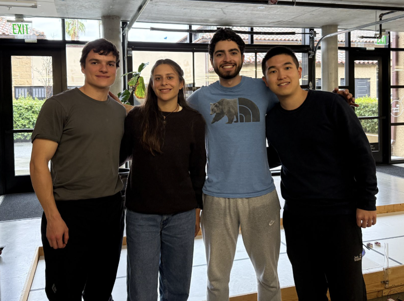
The goal of ME210 was to design and build an autonomous robot (a DROID) that could compete in a head-to-head curling competition, placing pucks as close as possible to a target center. The robot must operate fully autonomously using sensors, motors, and an Arduino-based control system.
Build the simplest system that could reliably complete the task. Every subsystem (sensing, actuation, and control) was chosen to minimize failure modes while meeting the autonomous operation requirement.
The robot reads two IR beacons to determine it is aligned with the field, drives forward tracking the centerline tape, stops at the scoring boundary, and releases pucks down a gravity slide.
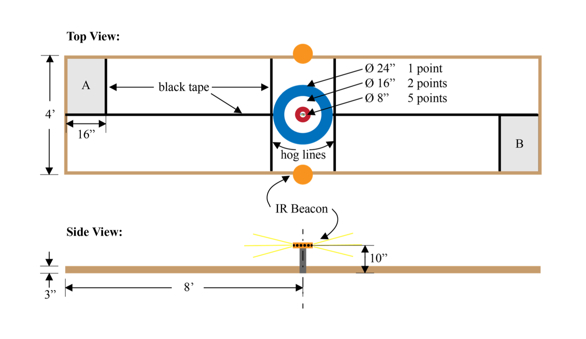
Field layout — beacon positions, tape centerline, and scoring zone
The robot is governed by a finite state machine (FSM). Each state encodes a unique behavior. Transitions are triggered by sensor events and drive the robot through a deterministic sequence from start to completion.
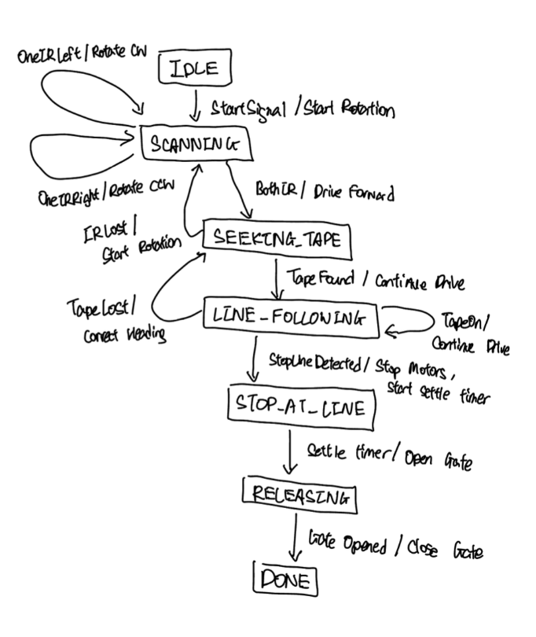
Figure 1 — FSM diagram: all states, transitions, and triggering events
Waits at start position for the competition start signal.
Rotates in place, sweeping both IR sensors for the beacon signal.
Drives forward until the line sensors detect the centerline tape.
Tracks the centerline tape toward the scoring zone.
Detects the stop line and halts within the scoring boundary.
Servo gate opens; pucks slide down ramp into the target area.
All pucks released. Robot holds position until round ends.
These sensor events drive transitions between states:
The robot begins in IDLE, rotates to scan for beacons, drives to acquire the tape line, follows it to the target, brakes at the scoring boundary, and releases all pucks before entering DONE. The entire sequence runs without human intervention.
The FSM was implemented in Arduino C++ using a switch-case pattern. Each state polls its relevant sensors once per loop iteration and posts events to a shared event queue, keeping sensing and state logic decoupled.
Each subsystem was designed, prototyped, and tested independently before integration. The sections below document the design intent, prototype evolution, and lessons from each subsystem.
A servo-controlled gate holds pucks in a magazine and releases them on command. When the robot reaches the scoring zone the Arduino triggers the servo, opening the gate and allowing gravity to deliver the pucks down a fixed-angle slide.
The goal of the puck release mechanism was to deliver pucks reliably into the scoring zone while keeping the mechanical system simple enough to build, test, and iterate quickly. Because the project timeline was short and subsystem integration was critical, we prioritized a design that minimized moving parts and complex control logic.
To achieve this, we chose a gravity-fed slide mechanism. This approach allows the pucks to travel down a ramp once a gate is opened, eliminating the need for additional motors, launchers, or complex timing control. The simplicity of gravity-driven motion made the system easier to debug and more robust during testing.
The gate is controlled by two servo motors, which allowed us to hold the pucks in place without requiring additional printed parts or mechanisms to resist the puck load. Using two servos also reduced the need to stall a single servo under load, improving reliability.
We selected a gravity slide because it has no moving parts beyond the gate servo, making it highly reliable. The slide is 3D printed at a fixed angle; the servo rotates 90° to open and close the gate flap.
Pucks are loaded vertically into the magazine before each run. The gate holds them against the slide surface until release.
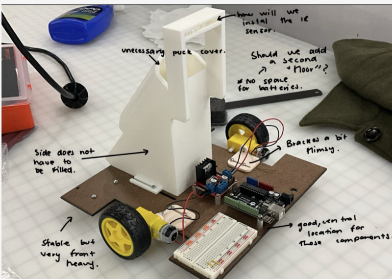
Figure 3 — Gravity slide design showing subsystem integration with the chassis and electronics
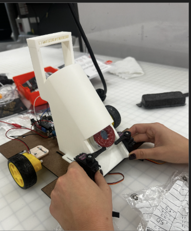
Figure 2 — Puck release mechanism during testing
Three concepts were evaluated before committing to the gravity slide approach.
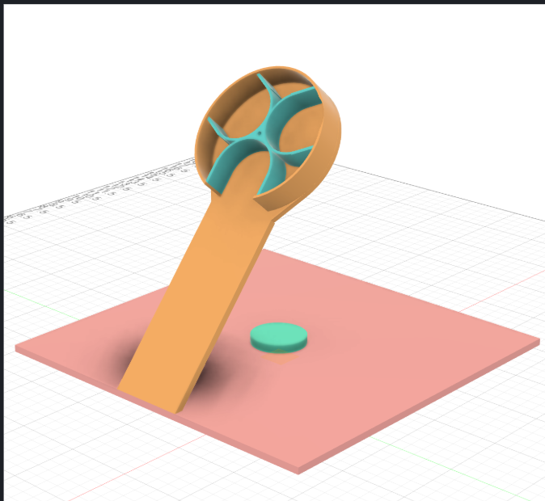
Rotating drum feeds pucks one at a time through a fixed exit port.
✕ Rejected — jamming risk, high part count
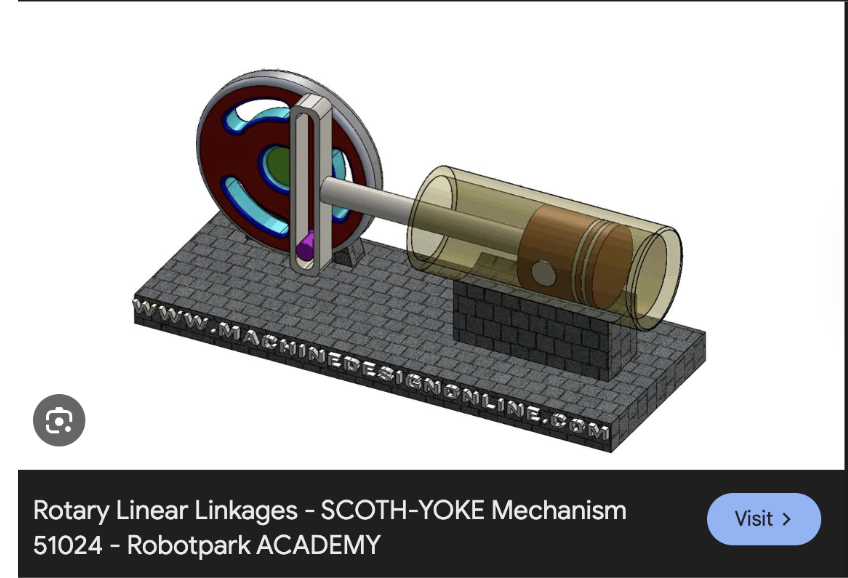
Linear actuator pushes pucks forward into the scoring zone.
✕ Rejected — less precise, harder to control
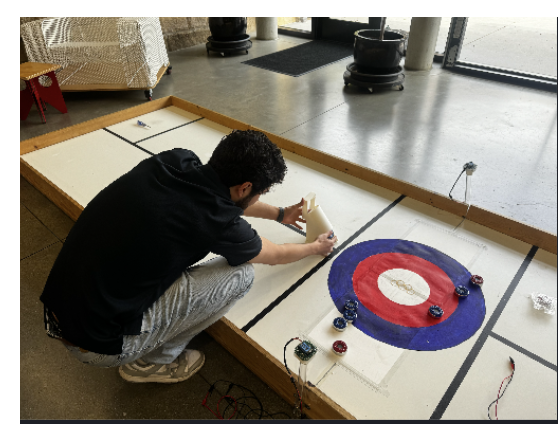
53° ramp with servo gate. Gravity delivers pucks once gate opens.
✓ Selected — simple, reliable, repeatable
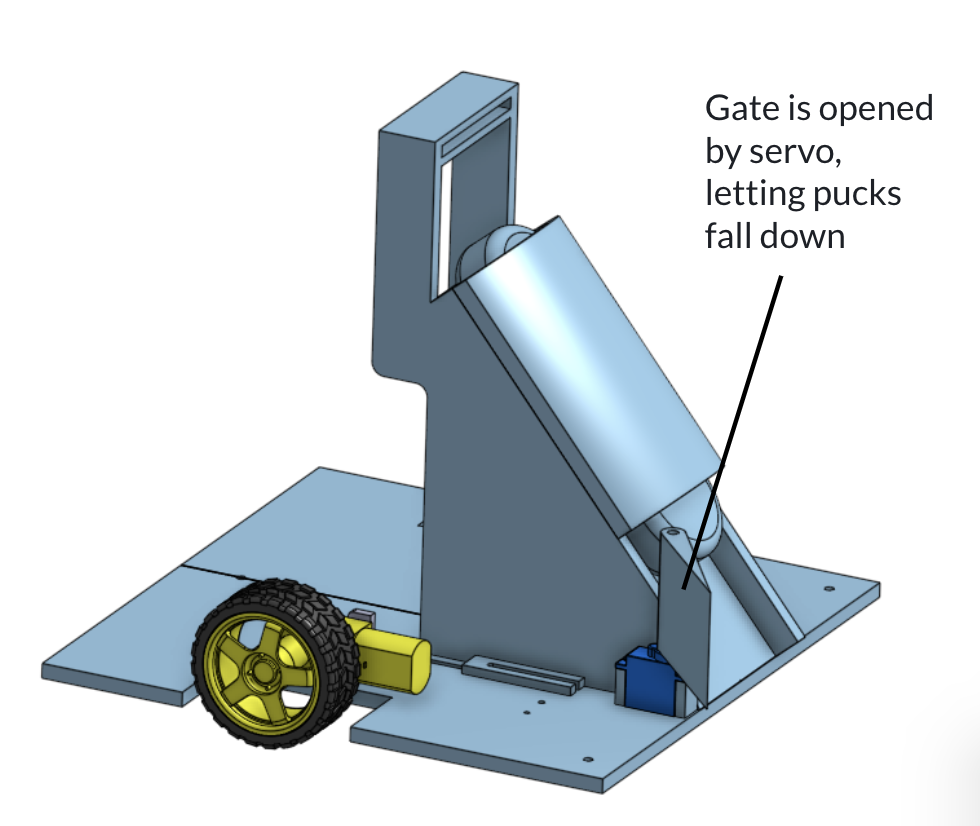
Figure 3a — Push mechanism, labeled view 1
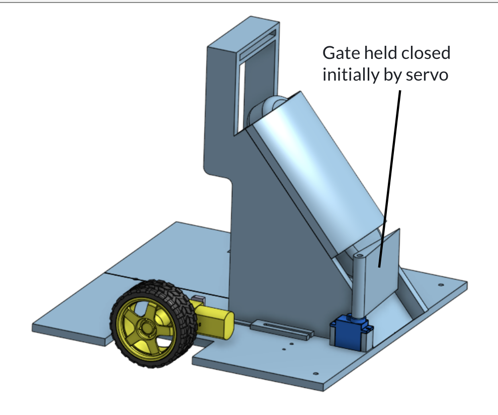
Figure 3b — Push mechanism, labeled view 2
In our first iteration, the servos were positioned closer to the ground near the base of the ramp. While this configuration successfully demonstrated the minimum viable product, it produced puck trajectories that were shorter than desired and occasionally led to minor alignment issues as the pucks exited the gate.
After confirming that the gravity-fed slide concept worked reliably, we refined the design by moving the servos higher and extending the length of the slide. This modification allowed the pucks to settle more smoothly before leaving the ramp and significantly improved their final travel distance toward the target.
These adjustments resulted in more consistent puck placement while preserving the simplicity of the mechanism, which was a key design priority for rapid testing and iteration.
Finally, we used a fixed ramp angle to keep the puck trajectory consistent. By tuning the ramp geometry rather than relying on active control, we were able to achieve repeatable puck placement while keeping the subsystem mechanically simple.
Figure 4 — First robot: MVP 53° slide, servos positioned at base of ramp
Figure 5 — Second robot: final design, isometric view
Two IR sensors placed on the left and right sides of the robot detect 909 Hz infrared beacons positioned at the end of the arena. The robot rotates until both sensors trigger simultaneously, confirming it is aligned with the field centerline before driving forward.
Achieve reliable directional orientation using a passive detection scheme that does not require precise placement or calibration at the start of each run.
Each IR sensor includes an analog high-pass filter stage before the Arduino input. The filter passes only the 909 Hz modulated beacon carrier while attenuating DC ambient light. The Arduino reads each sensor output digitally; above threshold means beacon detected.
During SCANNING the robot rotates slowly. As the left sensor triggers, it slows; when both trigger, it stops and transitions to SEEKING_TAPE.
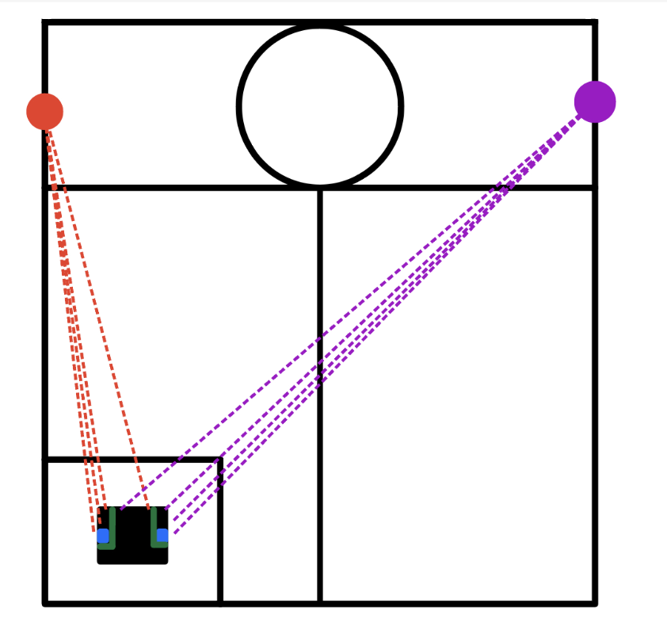
Figure 6 — IR sensor placement and detection geometry
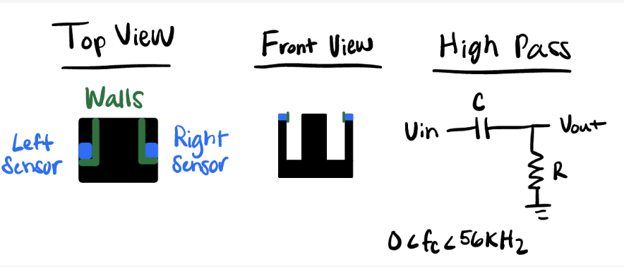
Figure 7 — IR sensor signal path and logic
The circuit went through two major revisions as noise and sensitivity issues were discovered in testing.
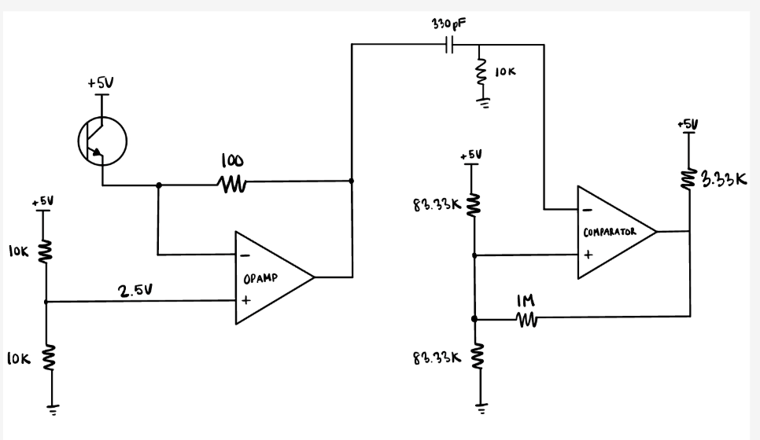
Figure 8 — Initial IR detection circuit schematic
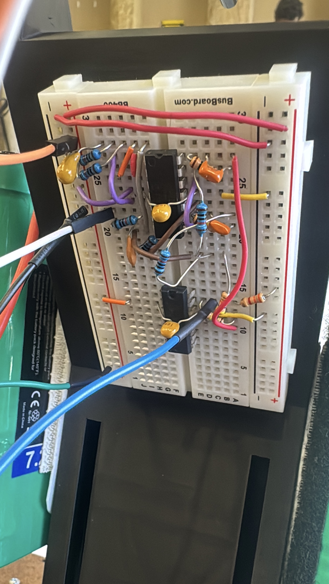
Figure 9 — Mounted IR sensor on robot
Three TCRT5000 reflective IR sensors mounted beneath the chassis detect the black centerline tape on the curling sheet and steer the robot toward the scoring zone. The robot corrects its heading in real time based on which sensors are over the tape.
Guide the robot along the field centerline reliably without relying on encoders or inertial sensors. The solution must tolerate minor starting misalignment and recover if the robot drifts off the tape.
Each TCRT5000 emits IR and reads reflected intensity. Black tape absorbs IR and returns a low reading; the light sheet surface reflects well and returns high. The Arduino reads each sensor and applies a lookup table to decide the correction direction and magnitude.
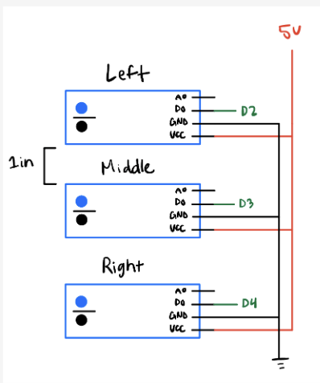
Figure 9 — Line sensor placement diagram
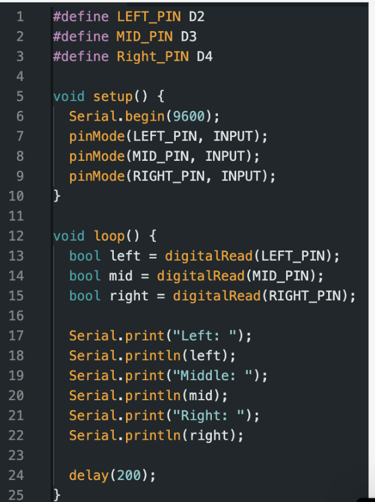
Figure 10 — Line following in testing
Quick Tip — What Actually Trips You Up
Line sensing is relatively simple in concept, but two things consistently reduce reliability in practice. The first is physical: if your sensors are not mounted securely, what looks like a circuit or code bug is often just a loose wire or a sensor that shifted position after assembly. Always rule out mechanical issues before debugging software.
The second is in the code. As your state machine grows in complexity, it becomes easy to lose track of which state is commanding the motors and why. Stay faithful to your state diagram: if a behavior isn't in the diagram, it shouldn't be in the code. Invest early in specialized functions (one function per action, one function per sensor read) so each state stays readable and testable on its own.
Two TT yellow DC gear motors provide differential drive. An L298N dual H-bridge driver controls motor direction and speed under PWM commands from the Arduino, enabling forward driving, rotation for IR scanning, and line-correction steering.
Deliver adequate torque and speed for the robot mass on the curling sheet surface while keeping the electrical design within the power budget of a single battery pack.
The robot uses a differential drive system powered by two gear motors, which allow it to drive forward, rotate in place during IR scanning, and make small steering corrections while line following. Our original plan was to use TT yellow DC gear motors, but after testing we found that they did not provide enough torque for the full robot under real operating conditions. To achieve more reliable motion, we switched to Jameco Part No. 151442 motors, which gave us the torque needed to move the robot more consistently.
Motor direction and speed are controlled through an L298N dual H-bridge motor driver, which receives PWM and direction commands from the Arduino. This setup gave us a simple and robust way to command forward motion, turning, and line-correction maneuvers while integrating cleanly with the rest of the control system.
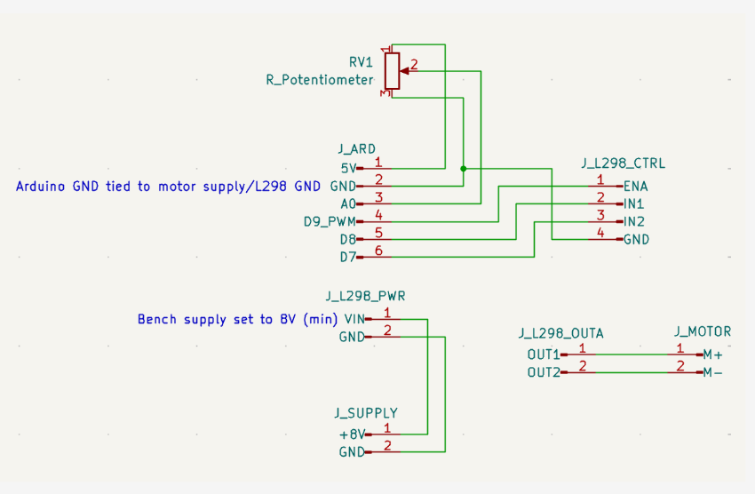
Figure 11 — L298N motor driver circuit schematic
Quick Tip — Motor Mounting and Wheel Fit
Over-tightening the motor mount screws is an easy mistake to make. Too much clamping force on the motor body can restrict the internal gearing and cause erratic behavior or stalling under load. Snug is enough; the motors should be held firmly but not compressed.
If we could iterate again, we would source wheels specifically sized for the Jameco 151442 shaft. The wheels we used were not matched to the motor shaft diameter, which meant they did not seat reliably. The fit was loose enough that the wheels would slip or wobble under load rather than transmitting torque cleanly. Getting the shaft-to-wheel interface right early saves significant debugging time later.
The chassis was laser cut for precise mounting hole locations; the puck slide and motor brackets were 3D printed to allow rapid geometry iteration. All electronics were mounted on standoffs to isolate wiring from structural vibration.
| Component | Description | Qty |
|---|---|---|
| Arduino Uno | Main microcontroller — runs FSM, reads sensors, commands actuators | 1 |
| Jameco 151442 Motors | Gear motors — differential drive, one per side | 2 |
| Wheels | Paired with Jameco 151442 motors for ground contact and traction | 2 |
| 9G Servo Motor | Controls puck release gate | 1 |
| TSOP IR Sensors | Beacon detection — one left, one right | 2 |
| TCRT5000 IR Reflective Sensor | Detect tape lines for line following — Lab ($0.83 × 3) | 3 |
| 26-020 Toggle Switch (SPST) | Emergency kill switch — required by project safety specs (Newark) | 1 |
| L298N Motor Driver | Dual H-bridge for PWM motor control | 1 |
| Battery Pack | Power supply for motors and logic | 1 |
| 3D Printed Slide | 53° gravity ramp for puck delivery | 1 |
| 3D Printed Brackets | Motor and servo mounts | 2 |
| Laser-cut Chassis | Main structural frame — acrylic or plywood | 1 |
The chassis was laser cut from sheet stock with pre-located holes for motors, Arduino standoffs, and sensor mounts. Motor brackets and the puck slide were 3D printed, enabling same-day geometry changes between test sessions.
Wiring was routed along the chassis perimeter and bundled with zip ties to prevent interference with the line sensors directly below. All connections use female-to-female jumper wires to simplify disassembly during debugging.
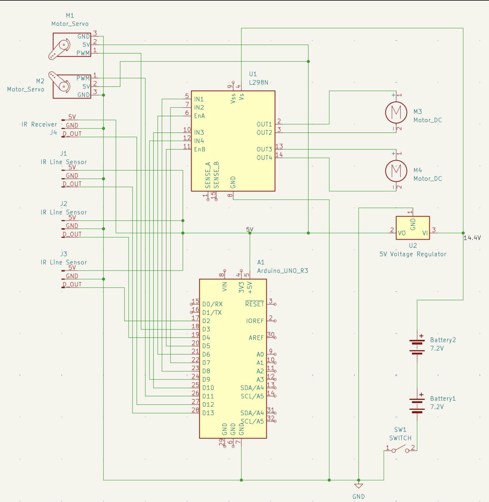
Figure 12 — Full assembly circuit diagram
Quick Tips